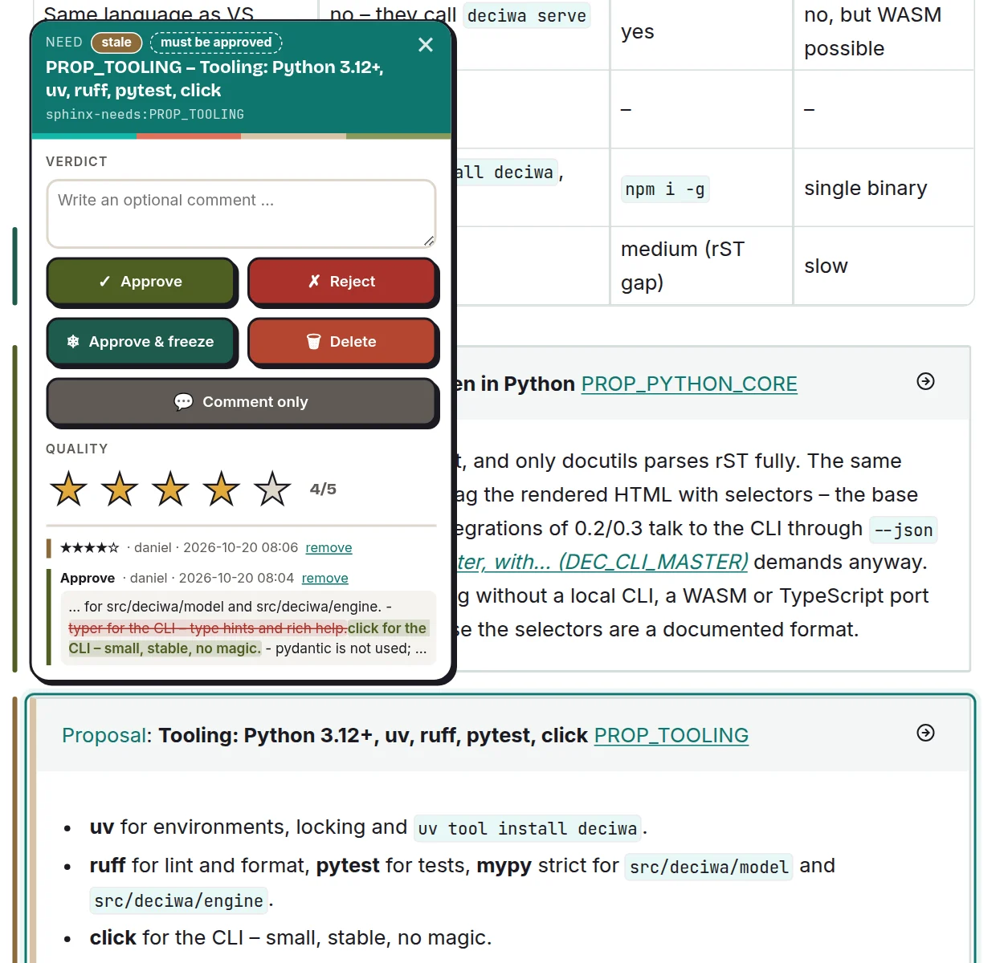

What you can review¶
Everything you can point at is an element – a Sphinx-Needs requirement, a heading, a paragraph, a table row, a picture or a single selected word. There are no markers in the source; deciwa finds the elements in the content itself (No markers in the source; e... (DEC_NO_MARKERS)).
Review on the result¶
You review what readers see: the built Sphinx page, rendered Markdown, the live website (Reviews happen on results, ... (DEC_REVIEW_ON_RESULTS)). Every element of the result belongs to its place in the source, so the same feedback shows up wherever the element is shown. Code is reviewed in the source.
Elements per format¶
Hovering highlights the element under the pointer; a click or a key selects
it. Alt moves one level up, e.g. from a paragraph to its section. Selecting
text first gives feedback on just those words (Format objects are highligh... (DEC_HOVER_SELECT)).
Format |
Elements |
Available |
|---|---|---|
Sphinx (rST, Markdown) with Sphinx-Needs |
need, section, paragraph, list item, table row, code block, note, picture |
now |
Markdown |
section, paragraph, list item, table row, code block, frontmatter field |
0.1 |
Plain text |
paragraph, line |
0.1 |
Python |
module, class, function, method, docstring |
0.4 |
HTML |
block containers, headings, paragraphs, images |
now (web script) |
JSON, YAML |
the document, every object, array and single value |
|
AsciiDoc, C, JS, TS |
sections and blocks; functions, classes, structs |
later |
Pictures – images, figures and inline SVG diagrams – are reviewed as a whole.
When an element changes¶
deciwa recognises an element again after the file was edited, even when it moved. What happens to your feedback:
The element … |
Shown as |
|---|---|
is unchanged |
your verdict as it is |
was changed after you approved it |
|
was changed although it is frozen |
|
cannot be found any more |
|
A redrawn picture counts as changed too.


Approved, then changed: the history shows what changed.¶